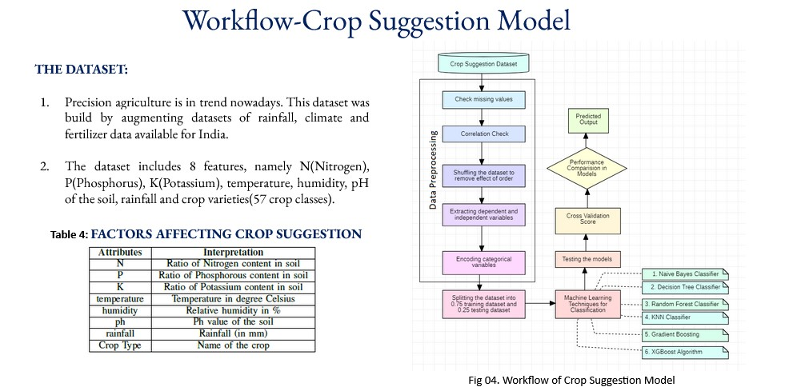
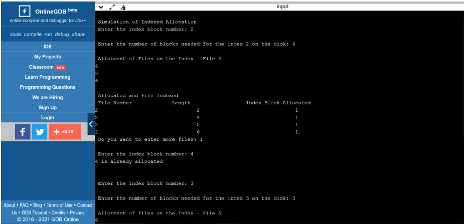
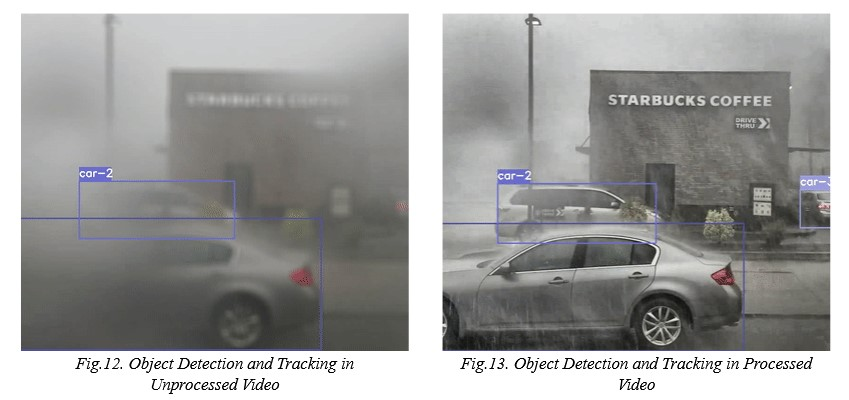

In this project, we first pre-process and clean agricultural data obtained from Kaggle using Python and prepare it to use classification techniques. This project is also a part of the main project: Early Prediction of Crop Yield In
India Using Machine Learning Techniques which is selected for oral presentation in TENSYMP Conference 2022, IIT Bombay and is published in IEEE Explore.


Trying to analyse a movie dataset by cleaning it with Numpy and Pandas Tools and the visualizaing it with Matplotlib Library in Python. This project is to study correlation between year of release, budget and other attributes to find
their effect on movie ratings.

Data Exploration of COVID in SQL Server

Implementation and Simulation of Standard OS Algorithms. In Page Replacement Algorithms, FIFO, LRU, MRU and Optimal ALgorithm is implemented. For File Allocation Algorithms, Sequenced Allocation, Linked Allocation and Indexed Allocation
is implemented. Disc Schedueling Algorithms include FCFS, SSTF, LOOK, SCAN, C-LOOK and C-SCAN algorithms are implemented. Also in this project Classical Problems like Reader-Writer Problem, The Dining Philosopher's Problem and
Producer Consumer Semaphore Problemis discussed with their implementation logic

This project works on the vehicle detection in adverse weather which includes comparision between multiple combinations of dehazing techniques and deep learning algorithms to study the accuracy of the algorithms. In this branch, the
discussion is on classical CLAHE and Dark Prior and the combination of these two algorithms. There are huge differences in the accuracy obtained to detect obstacles on road.
Implementation of Algorithms such as:
Clustering such as K Means, DBSCAN Algorithm and Agglomerative Clustering
Classification Algorithms such as Decision Tree Classifier and Random Forest Classifier
Boosting Algorithms such as Adaboost and XGBoost
This includes implementation of algorithms of -
P4 Firewall and it's Effect on DDOS Attacks
Compiler Design - Removing Left Recursion, LACC and YACC programs
Computer Networks - Flow Control Methods and Medium Access Control Methods
Cryptography - Symmetric and Assymetric Cipher
Statstical Data Analysis - Pandas, Bokeh, Matplotlib and Seaborn
And many more...